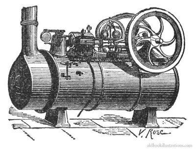

Why did crime start and occur during the Industrial Revolution?
The Industrial Revolution, indisputably enhanced large-scale factory manufacturing and operating methods, as well as introducing new machinery, new power sources and more productive and effective ways of organizing work. As a result, there were more goods manufactured and sold.
The Spinning Jenny
The spinning jenny was a machine that used a large wheel to spin many spindles of thread at once
The Flying Shuttle
The flying shuttle introduced a more efficient way of weaving as it could produce cloth more quickly
The Water Frame
The water frame was a spinning frame that could produce yarns of any type
Crompton's Mule

The crompton's mule allowed for a single power source to spin multiple machines & produce high-quality yarn
The Seed Drill
The seed drill was an important invention that enabled us to plant seeds more efficiently
The Steam Engine

The steam engine was a simple device that used boiling water to create mechanical motion to be utilized in useful work
The Cotton Gin
This was a significant invention that helped separate cotton seeds from cotton fibres
However, industrialisation also had a harmful effect on society. Rapid urbanization, terrible living conditions, the spread of deadly diseases and an increase in crime rates were all part of it. Families were forced by factories to move into urban areas in order to work and earn an income. Without a well-organized police force and factories, warehouses and shops full of goods, towns and cities became the hotspot for crime and violence.
Fears and concerns that machinery might deprive people of their jobs increased. Many people turned to crime as a way to improve their poor living conditions and low-income. Furthermore, because of the low life expectancy in industrial cities, orphans were widespread, thus they often turned to crime to make ends meet. During in the Industrial Revolution, majority of people often lived cramped conditions, with open sewers and garbage scattered streets.